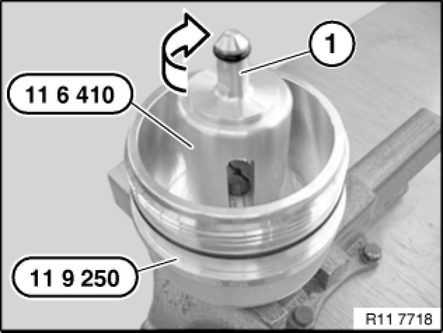

Engine Oil Pressure: Testing and Inspection
11 40 000 - Checking engine oil pressure (N53)

Special tools required:
- 11 6 410 11 6 410 Adapter
- 11 9 250 11 9 250 Cap
- 13 6 051 13 6 050 Set of Adapters for BMW DIS

Important!
The regulated oil pump can only be checked and measured with the diagnosis system.
Special tool 11 9 250 11 9 250 Cap must be retrofitted for the N52k and N53.

Necessary preliminary tasks:
- Connect BMW diagnosis system to vehicle.
- Observe diagnosis instructions.
Secure special tool 11 9 250 11 9 250 Cap at hexagon head in a vice.
Release insert (2) using a screwdriver (1) in direction of arrow.
Release screw piece (1) on special tool 11 6 410 11 6 410 Adapter.
Install special tool 11 6 410 11 6 410 Adapter in special tool 11 9 250 11 9 250 Cap.
Insert central screw with a screwdriver (1) hand-tight.

Insert screw piece (1) hand-tight in direction of arrow on special tool 11 6 410 11 6 410 Adapter.

Release oil filter cap with special tool 11 9 240.
Tightening torque: 11 42 1AZ.
Carefully detach filter element.
Installation Note:
Check all O-rings for damage, replace if necessary.
Install filter element (1) in special tool 11 9 250.
Installation Note:
Coat O-ring with engine oil.
Important!
Engine oil pressure measurement is only possible with the diagnosis system.
Screw in special tool 11 9 250 11 9 250 Cap with a filter element.
Secure special tool 13 6 051 13 6 050 Set of Adapters for BMW DIS with a sealing ring to special tool.
Start engine and check engine oil pressure.
Specified values.

Assemble engine.